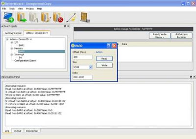
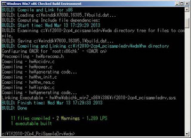
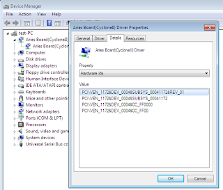

ในตอนนี้จะเป็นการเขียน driver สำหรับ PCI card บน Windows โดยจะใช้ windriver (http://www.jungo.com) ซึ่งเป็นเครื่องมือที่ช่วยให้การเขียน driver ง่ายขึ้น
windriver จะช่วยให้เราสามารถ acess memory map ของ card ได้ง่ายขึ้น
เมื่อติดตั้ง driver แล้ว เราสามารถตรวจสอบ device ได้จาก device manager ของ windows
